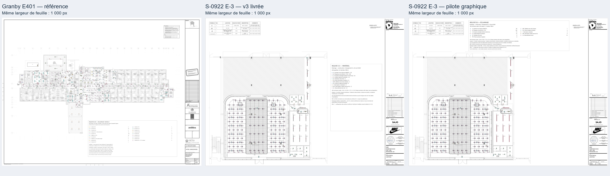
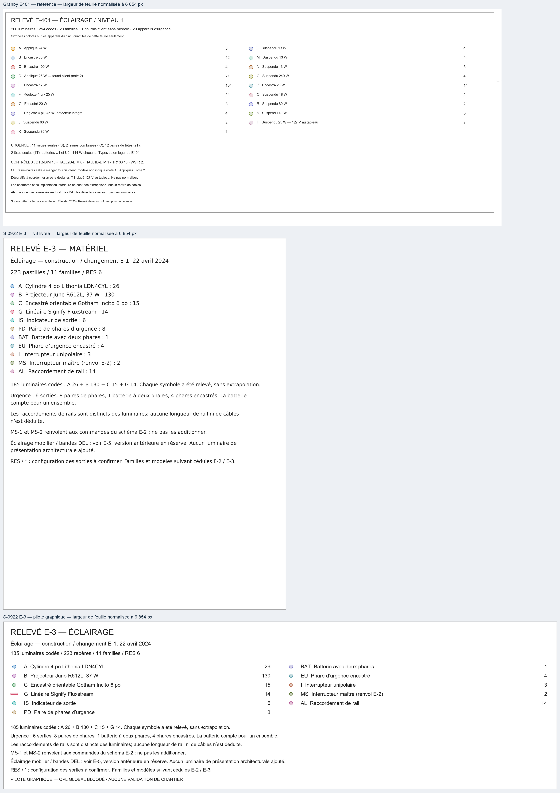
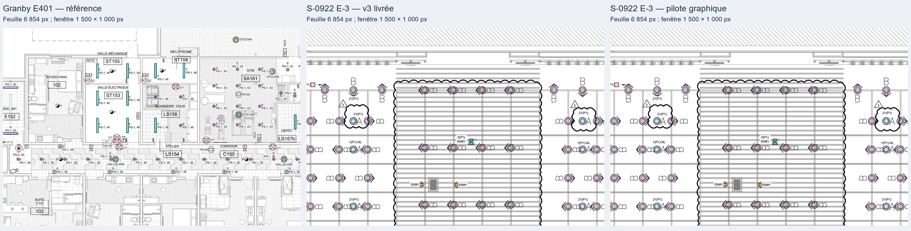
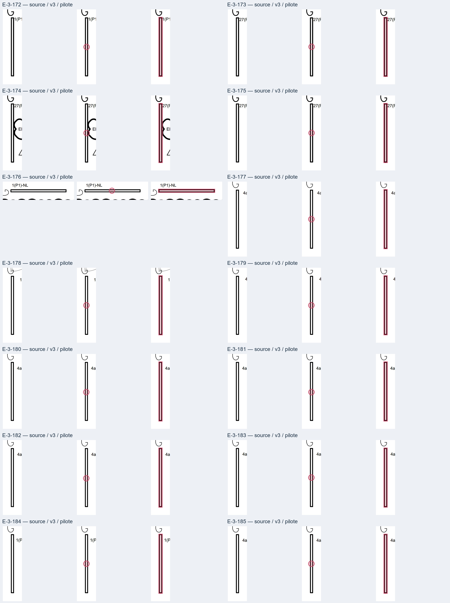
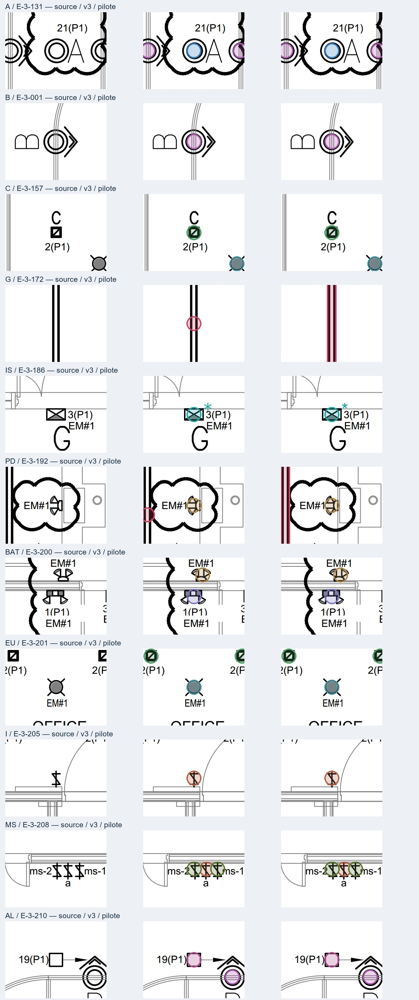

S-0922 — pilote graphique E-3
Proposition pour revue indépendante — aucune généralisation.
QPL global : BLOCKED. Aucun 95 % démontré. Aucune validation de chantier. E-5 et ses 72 réserves restent inchangées.
Le pilote conserve la feuille entière et déplace sa légende vers une zone intérieure vide. Il propose deux groupes de familles à quantités alignées et 14 contours G adaptés aux symboles linéaires. Toutes les données et coordonnées sont conservées.
56 tests réussis après le rendu; paquet réel : 27 fichiers, 26 empreintes indexées conformes. Ces contrôles ne constituent pas une acceptation graphique ou métier globale.
Ouvrir le JPEG E-3 exact · Rapport détaillé et limites · Diff du renderer · Tests

Pages entières : 1 000 px de largeur pour chaque feuille.
Légendes : feuilles normalisées à 6 854 px avant prélèvement. Cliquer pour examiner à pleine taille.
Zone dense : mêmes fenêtres que l’audit, même largeur de feuille et même facteur d’affichage.
Les 14 G : source / v3 / pilote. Géométries mesurées sur les symboles source.
Onze familles témoins : source / v3 / pilote. Les réserves restent visibles.La même largeur de feuille n’égalise pas l’échelle architecturale des deux projets. Police, couleurs et dimensions de dessin sont des choix de rendu, pas de nouvelles exigences attribuées à Francis.